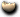
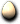
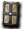

原野
盧亞斯森
米魯里斯森
斯歐米森
魔界村森
魯克西翁森
艾德安德周邊
卡雷瓦拉森
伊卡洛斯周邊
萊比亞周邊
【伊卡洛斯周邊】草原1｜草原2｜遺跡1｜遺跡2｜食蟲植物1｜食蟲植物2｜食蟲植物3｜食蟲植物4｜卵巢1｜卵巢2｜卵巢3｜卵巢4｜火山1｜火山2
※各怪物的編輯請由標題的鉛筆圖示進行。掉落物品的編輯也可以從掉落物品欄的
出現怪物
強力小梅馬德
| 強力小梅馬德 | Lv | AC | MC | AAR | SAR | 掉落物品 |
| HP:5148 | 50 | -30 | -10 | 20 | 10 |  [100]小梅馬德變身捲軸、 [100]小梅馬德變身捲軸、 戰士耳環、水瓶、電漿捲軸 戰士耳環、水瓶、電漿捲軸 |
| 經驗值 | 名聲值 | 金錢 | 攻擊屬性 | 防禦屬性 | ||
| 2000 | 0 | 200 | 無 | 土 | ||
| STR | DEX | INT | WIS | CON | ||
| 13 | 33 | 3 | 53 | 63 |
備註
兇猛小梅馬德
| 兇猛小梅馬德 | Lv | AC | MC | AAR | SAR | 掉落物品 |
| HP:6874 | 60 | -30 | -10 | 40 | 10 | 記憶之書、攻城鎚、 熱情之帽 熱情之帽 |
| 經驗值 | 名聲值 | 金錢 | 攻擊屬性 | 防禦屬性 | ||
| 3300 | 0 | 250 | 無 | 土 | ||
| STR | DEX | INT | WIS | CON | ||
| 13 | 33 | 3 | 63 | 83 |
備註
死亡小梅馬德
| 死亡小梅馬德 | Lv | AC | MC | AAR | SAR | 掉落物品 |
| HP:40248 | 70 | -35 | -15 | 40 | 10 |  彩券、攻城梯、拼圖寶石 彩券、攻城梯、拼圖寶石 |
| 經驗值 | 名聲值 | 金錢 | 攻擊屬性 | 防禦屬性 | ||
| 11400 | 4000 | 700 | 隨機 | 隨機 | ||
| STR | DEX | INT | WIS | CON | ||
| 53 | 33 | 3 | 73 | 103 |
備註
梅馬德爸爸
| 梅馬德爸爸 | Lv | AC | MC | AAR | SAR | 掉落物品 |
| HP:5148 | 50 | -30 | -10 | 20 | 10 | [102]梅馬德爸爸變身捲軸、水瓶、堅固的毛皮、 解毒術、記憶之書（個人） 解毒術、記憶之書（個人） |
| 經驗值 | 名聲值 | 金錢 | 攻擊屬性 | 防禦屬性 | ||
| 2100 | 0 | 200 | 水 | 土 | ||
| STR | DEX | INT | WIS | CON | ||
| 23 | 43 | 3 | 13 | 63 |
備註
貪婪梅馬德爸爸
| 貪婪梅馬德爸爸 | Lv | AC | MC | AAR | SAR | 掉落物品 |
| HP:6902 | 60 | -30 | -10 | 40 | 10 | 水瓶、雜耍頭飾、破碎多佩羅豎琴(雙手)、[102]梅馬德爸爸變身捲軸 |
| 經驗值 | 名聲值 | 金錢 | 攻擊屬性 | 防禦屬性 | ||
| 3300 | 0 | 250 | 水 | 土 | ||
| STR | DEX | INT | WIS | CON | ||
| 33 | 43 | 3 | 13 | 83 |
備註
強力梅馬德爸爸
| 強力梅馬德爸爸 | Lv | AC | MC | AAR | SAR | 掉落物品 |
| HP:20124 | 70 | -30 | -10 | 40 | 10 | 水瓶、[102]梅馬德爸爸變身捲軸、普洛菲斯特加爾德 |
| 經驗值 | 名聲值 | 金錢 | 攻擊屬性 | 防禦屬性 | ||
| 5700 | 0 | 350 | 水 | 土 | ||
| STR | DEX | INT | WIS | CON | ||
| 43 | 43 | 3 | 13 | 103 |
備註
飛天三角龍
| 飛天三角龍 | Lv | AC | MC | AAR | SAR | 掉落物品 |
| HP:6946 | 60 | -60 | -40 | 10 | -20 |  三角龍的蛋、 蛋龍的蛋、熱情之帽、曼德拉草水、 破碎之刀、柯斯莫小型生命之泉製法、魔法粉、[108]飛天三角龍變身捲軸、召喚 破碎之刀、柯斯莫小型生命之泉製法、魔法粉、[108]飛天三角龍變身捲軸、召喚 |
| 經驗值 | 名聲值 | 金錢 | 攻擊屬性 | 防禦屬性 | ||
| 4620 | 0 | 250 | 風 | 風 | ||
| STR | DEX | INT | WIS | CON | ||
| 23 | 53 | 3 | 63 | 83 |
備註
貪婪飛天三角龍
| 貪婪飛天三角龍 | Lv | AC | MC | AAR | SAR | 掉落物品 |
| HP:20124 | 70 | -60 | -40 | 10 | -20 |  魔法鐵月（新）、曼德拉草水、 神授耳環、魔法粉、蛋龍的蛋、柯斯莫小型生命之泉製法 神授耳環、魔法粉、蛋龍的蛋、柯斯莫小型生命之泉製法 |
| 經驗值 | 名聲值 | 金錢 | 攻擊屬性 | 防禦屬性 | ||
| 7,980 | 0 | 350 | 風 | 風 | ||
| STR | DEX | INT | WIS | CON | ||
| 23 | 53 | 3 | 63 | 83 |
備註 無視隱形
強力飛天三角龍
| 強力飛天三角龍 | Lv | AC | MC | AAR | SAR | 掉落物品 |
| HP:32760 | 80 | -60 | -40 | 10 | -20 | 卡爾瑪拳套、曼德拉草水、三角龍的蛋、蛋龍的蛋、魔法粉 |
| 經驗值 | 名聲值 | 金錢 | 攻擊屬性 | 防禦屬性 | ||
| 10,752 | 0 | 500 | 風 | 風 | ||
| STR | DEX | INT | WIS | CON | ||
| 23 | 53 | 3 | 63 | 83 |
噴射之燄、 惡魔之眼、
惡魔之眼、 地獄死靈
地獄死靈